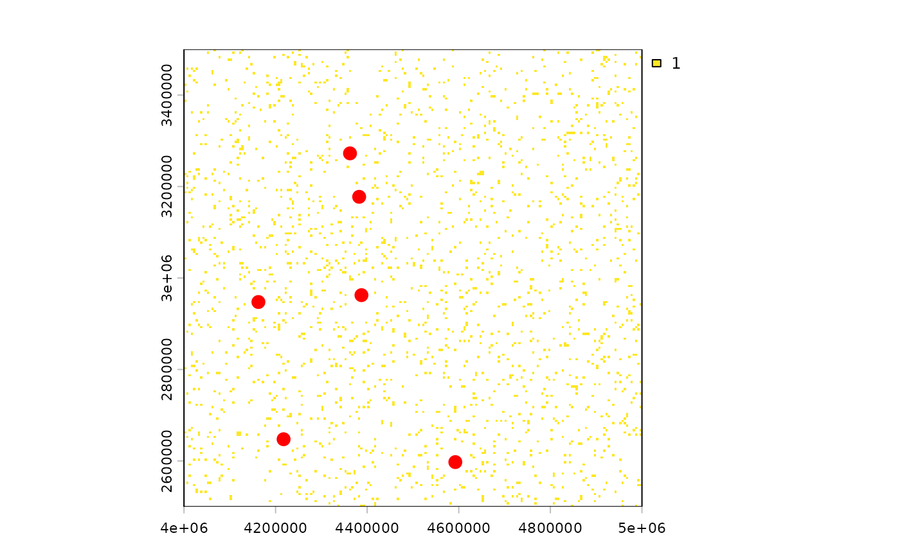

Identify raster cells with value 1 whose nearest neighbouring occupied cell
is farther than a specified distance threshold.
Arguments
- r
A
terra::SpatRaster. Cells with value1are treated as occupied/presence cells.- threshold
Numeric. Minimum nearest-neighbour distance (in kilometers) required for a cell to be classified as a spatial outlier. For example:
threshold = 100identifies occupied cells located more than 100 km from any other occupied cell.- plot_outliers
Logical. If
TRUE(default), plots the raster and highlights detected spatial outliers in red.
Value
A tibble with one row per detected outlier containing:
cell: Raster cell index.x: x coordinate of the cell center.y: y coordinate of the cell center.dist_km: Distance (km) to the nearest occupied neighbouring cell.Returned rows are ordered from most isolated to least isolated.
Details
This function is designed for large spatial rasters and uses an efficient
nearest-neighbour search based on a kd-tree implementation (RANN::nn2()),
making it suitable for datasets containing thousands of occupied cells.
Spatial outlier detection is particularly useful in species distribution modelling (SDMs), biodiversity analyses, and ecological cleaning workflows, where isolated records may represent:
georeferencing errors,
accidental introductions,
strong sampling artefacts,
implausible dispersal events,
or genuinely isolated populations requiring further inspection.
Removing or reviewing extreme spatial outliers before model fitting can substantially improve SDM realism, reduce extrapolation artefacts, and prevent inflated environmental niche estimates.
The function performs the following steps: 1) extracts raster cells
with value 1; 2) converts cells to coordinates; 3) computes
nearest-neighbour distances using a kd-tree search; and 4) identifies cells
whose nearest occupied neighbour exceeds the specified distance threshold.
Computational complexity is approximately: $$O(n \log n)$$, making the approach feasible for very large rasters.
Unlike full pairwise distance matrices, this implementation avoids quadratic memory growth and remains memory efficient even for large occupancy datasets.
Distances are computed using raster coordinate units. Therefore, rasters should generally use a projected CRS with metric units (e.g. meters).
Geographic rasters (longitude/latitude) should typically be projected before use:
Examples
library(terra)
r <- terra::rast(
nrows = 200, ncols = 200, xmin = 4000000, xmax = 5000000,
ymin = 2500000, ymax = 3500000, crs = "EPSG:3035", vals = NA_real_)
# Simulated occupied cells
set.seed(100)
occ <- sample(terra::ncell(r), size = 2000)
r[occ] <- 1
# Detect cells isolated by >20 km
detect_outliers(r, threshold = 30)

#> # A tibble: 6 × 4
#> cell x y dist_km
#> <int> <dbl> <dbl> <dbl>
#> 1 36119 4592500 2597500 32.0
#> 2 34044 4217500 2647500 31.6
#> 3 9073 4362500 3272500 30.4
#> 4 12877 4382500 3177500 30.4
#> 5 21478 4387500 2962500 30.4
#> 6 22033 4162500 2947500 30.4